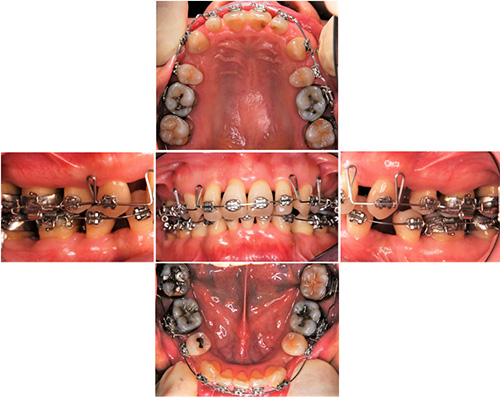
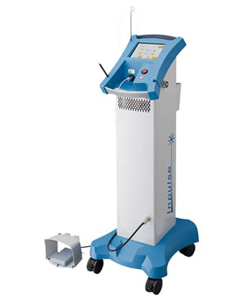

歯を失う恐れのある歯周病
歯周病は「サイレントディジーズ(Silent Disease、静かな病気)」と呼ばれるほど、病気の進行状況が自覚しにくく、なおかつ30代では7割の人が、40代では8割以上の人が発症していると言われている、非常に発症率の高い病気です。歯周病は放置してしまうと歯が抜けてしまう病気のため、早期段階で適切な治療を行うことが重要です。
藤沢の歯医者、玉木歯科医院の院長は日本歯周病学会より認定を得ている日本歯周病学会専門医・指導医です。豊富な知識・経験をもとに確かな治療をご提供いたします。
歯周病の危険さ
歯を失う原因の第一位は「歯周病」
成人の歯が無くなってしまう最も大きな原因を知っていますか？多くの方は「虫歯」とお答えになるかもしれませんが、実は「歯周病」によって歯を失ってしまうことが最も多いのです。歯周病は虫歯と違って痛みを伴うことがほとんどないため自覚症状がなく進行します。歯がぐらぐらしたり、食べ物が噛みにくくなるなどの自覚症状が出る頃には、すでに歯が抜ける寸前まで進行してしまっています。
さらに、歯周病は糖尿病や心疾患、脳卒中、更にはガンまで、全身の疾患や生活習慣病とも関連性があることが世界各国の医学論文で報告されているほど、全身の健康にも影響を与える重大な病気なのです。
歯周病が改善しない理由
当院へ転院されてきた患者様から、「それまで通っていた医院で歯周病の治療を受けていたはずなのに、症状が全く改善されない」というお声を聞くことがあります。その理由は、「歯周病の進行度に合った的確な処置がされていない」ことにあります。
歯周病は「治療できない」という歯科医師もいるほど、治療の難易度が高い病気でもあります。そのため、しっかりと歯周病治療の専門家による確かな治療を受けることが、歯周病対策には必要です。
歯周病治療における重要なポイント
「最終的なゴール」を見据えた治療計画

歯周病の治療においては、何より「最終的なゴール」を見据えた治療計画を立てる必要があります。歯周病は進行状況が測りづらく、完治したかしていないかが分かりづらい病気です。
しっかりとした検査・診断を行い、患者様の口内環境の現状を把握し、患者様のお悩みや希望もヒアリングしながら、「最終的にどういう口腔状態を目指すのか」という治療のゴールを設定します。治療のゴールを設定することで治療が進めやすくなるのは勿論ですが、何より患者様が「治そう！」という強い気持ちで治療に取り組むことが出来るようになります。
「プラークコントロール」の徹底
歯周病や虫歯は、「プラーク（歯垢）」中の細菌から酸や毒素などが産生されることによって発生します。そのため、いかにしてプラークの数を減らし、増やさないようにするかという「プラークコントロール」が重要になってきます。
プラークコントロールは、患者様と歯科医師が協力して行う必要があります。歯科医院でのアドバイスをもとに、患者様自身で毎日の歯磨きなどでプラーク除去を行ったり、食事・間食の内容を改善するなどの必要があります。そして、歯科医師による歯石の除去、プラークがたまりやすい箇所の治療と改善を行い、徹底的なプラークコントロールを行うことが重要です。
玉木歯科医院の歯周病治療の特徴
日本歯周病学会指導医による治療

玉木歯科医院では「歯周病専門医」を育成する立場である「日本歯周病学会指導医」の資格を取得している院長による治療を行っています。さらに国内でも数少ない「日本歯周病学会専門医研修施設」として認可を受けている、人・施設共に、歯周病治療に特化した歯科医院です。日本歯周病学会指導医が、高度な技術と豊富な経験に裏付けされた的確な診査・診断を行い、患者様のライフスタイルやお口の状態に合わせた治療方針を提案。患者様の大切な歯を健康な状態で残すため、誠心誠意、治療を行っています。
また、可能な限り患者様が治療の痛みを感じないようにと、身体的負担やダメージが少ない低侵襲な治療、かつ短期間で終わる治療を心がけております。
他院で抜歯と言われた難症例にも対応
もし、他の歯科医院で「抜歯が必要」と言われた場合でも、当院では「歯周組織再生誘導療法」と呼ばれる治療法を用い、可能な限り患者様自身の歯を残す治療を心がけております。この「歯周組織再生誘導療法」は、多数の治療ケースを院長自らが学会で発表しており、同じ歯科医師や専門家からも高い評価を得ている治療法です。更に、マイクロスコープ（歯科用顕微鏡）やルーペ（高倍率拡大鏡）などの器具を用いることにより、これまで見落としてしまっていた微細なプラークや歯石などを発見しやすくなり、適切に除去することが可能です。
歯周病の自覚がある方は勿論、自覚症状がない方でも歯周病は進行している可能性がある病気ですので、まずは歯周病治療のプロフェッショナルである玉木歯科医院まで、一度ご相談・検診にお越し下さい。
歯周組織再生誘導療法（エムドゲインゲル併用）
当院ではエムドゲインゲルを併用した治療法を採用しています。エムドゲインゲルはスウェーデンのビオラ社で開発されたブタ歯胚組織を使用した歯周組織再生用材料です、エムドゲインゲルの主成分（エナメルマトリクスデリバティブ）は子供の頃、歯が生えてくる時に重要な働きをするたんぱく質の一種です。現在の科学水準に基づく高い安全性確保の下、幼若ブタの歯胚から抽出精製したもので世界44カ国以上で累計200万症例以上使用されていて副作用報告は1例もありません。
歯周外科手術時、プラークと歯石をしっかりと除去した後、手術部位の歯根にエムドゲイン・ゲルを塗布し、歯周組織の再生を促す治療法です。歯周組織の状態を調べるために歯周ポケットの深さを測ったりレントゲンを撮ったり、その他必要な検査を行います。エムドゲインゲルを使った治療が行えるかどうかは歯周病の程度や患者さんの健康状態によっても異なります。
症例紹介
| 初診時 | |
|---|---|
| 主訴 |
患者様は37歳女性、歯茎から膿が出るとのことで来院。 デンタルエックス線を撮影すると、歯根1/2～2/3に及ぶ骨吸収像が認められた。 |
|---|---|
| 治療方針 | 歯周基本治療終了後、再評価を行い、深い活動性の歯周ポケットが認められる部位に対して歯周外科処置（歯周組織再生誘導療法：エムドゲインゲル併用）を行う。歯周外科処置終了後の再評価にて歯周組織の改善を確認してから機能性、審美性を改善するために矯正治療を行い矯正治療後メインテナンスへ移行する。 |
| 歯周外科処置時 | |
|---|---|
| 上顎前歯部にエムドゲインゲルを併用した歯周組織再生誘導療法を行った時の写真です。 | |
| 歯周外科処置時 | |
|---|---|
| 同じく、下顎前歯部にエムドゲインゲルを併用した歯周組織再生誘導療法を行った時の写真です。 | |
| 矯正治療中 | |
|---|---|
|  | |
| 歯周外科処置終了後、機能性・審美性を改善するために矯正治療を開始しました。 | |
| 動的治療終了後メインテナンス時 | |
|---|---|
| 治療前 |
|---|
| 治療後 |
|---|
| 治療期間 | 3年 |
|---|---|
| 治療費（税込） | 66万円（矯正治療費用は別） |
| 治療におけるリスク | 外科処置による腫れ・痛み（本ケースでは無し） |
本ケースでは侵襲性歯周炎の患者（初診時37歳）に対して歯周基本治療終了後、歯周組織再生誘導療法（エムドゲインゲルを併用）を行った事、矯正治療による圧下により術前と比較して歯周組織の大幅な再生が認められた。歯周炎患者に対して矯正治療を行う場合、徹底的なプラークコントロールおよび炎症性の歯周ポケットが除去されている事が必須である。
歯周組織再生誘導療法に関する学会発表
【2012年9月】
広汎型中等度慢性歯周炎患者に対し切除療法と歯周組織再生療法で対応した一症例.日本歯周病学会学術大
会プログラムおよび講演抄録集第55巻：102,2012.
【2013年9月】
広汎型侵襲性歯周炎患者にエムドゲインを用いた歯周組織再生療法と矯正治療を行った一症例.日本歯周病
学会学術大会プログラムおよび講演抄録集第56巻：135,2013.
実際のマイクロスコープの映像
レーザー治療による低侵襲な歯周病治療

レーザーを使用することで、器具では届きにくい歯周ポケットの奥深くや、複雑な歯周ポケットの内部にも光が届き、従来よりも精密に細菌を死滅させることができます。さらに、消毒も同時に行うことができ、歯周病の治癒を促進させる効果もあります。また、ポケットを切除しながら血を凝固（止血）させることができるため、切開の際にも出血がありません。
当院では、インパルス・デンタルレーザー（Nd：YAGレーザー）を導入しています。インパルス・デンタルレーザーは、瞬間的なレーザー照射を繰り返す照射方法（パルス発振）を採用しているため、照射時間が非常に短く痛みが少ないのが特徴です。ほとんどの症例で麻酔を使用せずに治療が可能なため、患者様に負担の少ない治療をご提供することができます。
また、歯周病治療だけではなく、初期の虫歯や口内炎の治療、歯ぐきの黒ずみの除去などにも使用することができます。
料金表
| 歯周組織再生誘導療法 | ¥110,000～ |
|---|---|
| 歯冠長延長術 | ¥110,000～ |
| 遊離歯肉移植術 | ¥110,000～ |
| 結合組織移植術 | ¥110,000～ |
※すべて税込